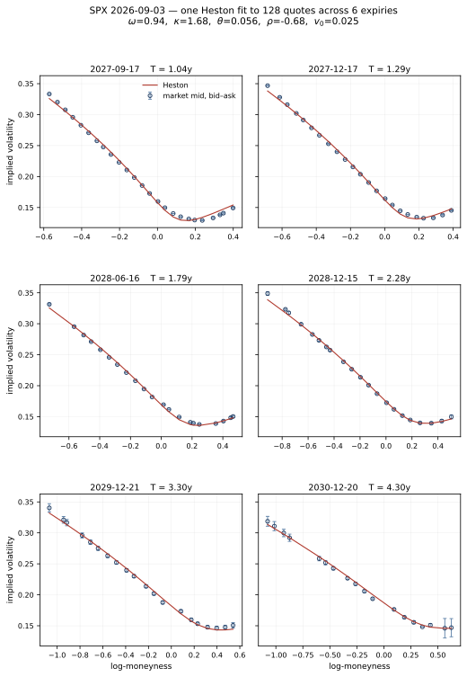

The Heston model [1] is affine, and the practical consequence of this is that its characteristic function is known in closed form (even though the spot density is not). Everything one wants to compute for European payoffs can therefore be written as a Fourier integral, and the only real question is how to compute it. This post is about two answers to this question: adaptive quadrature applied to the inversion integral, following Kahl and Jäckel [2], and the cosine expansion of Fang and Oosterlee [4]. They are both standard, they are both good, and they exhibit weaknesses in different places, which is yet another interesting part of the story, in addition to the merits of both methods.
The reason for caring about these weaknesses is calibration. A single price is cheap under either method, but what a usable calibration loop needs is a whole surface, recomputed at each iteration of the routine, and there the constant factors decide whether the implementation is merely correct in theory or actually correct and fast, and therefore useful in practice.
Write $v(t)$ for the instantaneous variance and $x(t) = \log f(t)$ for the log-forward. The Heston model is \[ \begin{aligned} dx(t) &= -\tfrac 12 v(t)\, dt + \sqrt{v(t)}\, dW(t), \\ dv(t) &= \kappa\left(\theta - v(t)\right) dt + \omega \sqrt{v(t)}\, dZ(t), \end{aligned} \] with $dW(t)\, dZ(t) = \rho\, dt$. The parameters are the (speed of) mean reversion $\kappa$, the long-term variance $\theta$, the volatility of variance $\omega$, the spot-variance correlation $\rho$, and the initial variance $v(0) = v_0$.
The pair $(x, v)$ is an affine process, and for such processes the conditional characteristic function is exponential-affine in the state with coefficients solving Riccati equations. For Heston those Riccati equations can be solved by hand, and one obtains \[ \log \varphi(u) = \frac{v_0 z}{\omega^2}\, \frac{1 - e^{-DT}}{1 - Ge^{-DT}} + \frac{\kappa\theta}{\omega^2}\left( Tz - 2\log\frac{1 - Ge^{-DT}}{1 - G}\right), \] where $z = \kappa - i\rho\omega u - D$ and \[ D = \sqrt{\left(\kappa - i\rho\omega u\right)^2 + \left(u^2 + iu\right)\omega^2}, \qquad G = \frac{\kappa - i\rho\omega u - D}{\kappa - i\rho\omega u + D}. \] In the equations, we use the forward as the underlying, so there is no drift term; adding it back is just a matter of multiplying by $e^{iu\mu T}$.
Before using the formula, some caveats must be taken care of. Both $D$ and the logarithm are multivalued, so one must choose the branches appropriately to get the right function. If one restricts the logarithm to its principal branch, as essentially every programming language does by default, the characteristic function can become discontinuous in $u$, leading to wrong results. This is the subject of Kahl and Jäckel [2], who keep track of winding numbers to stay in the correct branch of the logarithm, and of Lord and Kahl [3], who give an equivalent formulation that is easier to implement and better behaved in a calibration. Fang and Oosterlee state the practical rule compactly: take the square root with non-negative real part and the logarithm on its principal branch. In this way, the resulting characteristic function is the correct one.
Given the characteristic function, a European price is just an integral. Using the single-integral representation of Lewis [5], a call with strike $K$ on a forward $f$ is \[ C = D_f\left(f - \frac{\sqrt{fK}}{\pi}\int_0^\infty \frac{\mathrm{Re}\left(e^{iuk}\,\varphi(u - i/2)\right)}{u^2 + \tfrac 14}\, du\right), \qquad k = \log\frac{f}{K}, \] with $D_f$ the discount factor. The put is the same integral with $f$ replaced by $K$ in front, which is just put-call parity in disguise. So the whole pricing problem is one oscillatory integral over the positive real numbers, with a strong emphasis on oscillatory: this is yet another challenging aspect of the computation.
The integrand decays, but it also oscillates, and how fast it does either of these things depends on the model parameters. Kahl and Jäckel's contribution here is not only the branch analysis but a practical recipe: map the half-line $[0,\infty)$ onto $[0,1]$ by a substitution chosen so that the transformed integrand is well-behaved, then apply the adaptive Gauss–Lobatto quadrature of Gander and Gautschi [6]. The substitution is \[ u = -\frac{\log x}{C_\infty}, \qquad x \in (0,1], \] and $C_\infty$ is computed from the asymptotic decay rate of the integrand, so that the transformed integrand neither vanishes into a corner of $[0,1]$ nor oscillates across all of it. Adaptive quadrature then does the rest, refining the integration grid where the function actually varies.
Their method works well: there are published reference prices for the Heston model computed to many more digits than double precision carries, and a careful Go implementation of the above reproduces them to great accuracy. This is important to keep in mind, as rest of this post is mostly about the limits of their approach, and it would be easy to come away with a wrong impression that the adaptive quadrature does not have merit. Plainly said, for ordinary parameters and ordinary maturities this is an accurate and perfectly good method.
The limitations of this method fall in two categories. The first is structural, as the whole construction depends on a pre-computed decay rate which is only asymptotic. When the true behaviour departs from it (long maturities, strong mean reversion, large volatility of variance, or near-perfect correlation) the transformed integrand can end up either far more oscillatory than the quadrature's subdivision budget expects, or concentrated so close to an endpoint that a rule sampling the interior sees very little of it. Neither is really a defect of the quadrature, but simply a limitation to what it can do. The adaptive rule is a way of concentrating computational effort where a function varies the most, and the routine can only find variation if it is given enough samples of the function to actually see it.
The second limitation is more mundane: computing integrals is expensive. The integral above depends on the strike through $e^{iuk}$, which sits inside it. One adaptive quadrature yields one price. A smile of fifteen strikes is fifteen independent adaptive quadratures, each re-evaluating the characteristic function at its own fresh set of nodes, and the characteristic function is itself expensive to compute. Both of these issues point in the same direction: it would be much better to evaluate the characteristic function on a fixed set of frequencies, once, and recover all the prices at all the requisite strikes by reusing these values.
This is exactly what Fang and Oosterlee's COS method does [4]. The idea is to stop trying to compute the integral and instead reconstruct the density; after all, European prices can be read off immediately once the density is explictly found. The observation it rests on is that $\varphi$ and the density $p$ of the log-return are an inverse Fourier pair, in the sense that \[ \varphi(u) = \int_{\mathbb R} e^{iuy} p(y)\, dy . \] Fourier inversion recovers one from the other, so the two carry the same information and knowing $\varphi$ amounts to knowing $p$. Thus, what the affine property hands us is therefore not merely a convenient formula for pricing, but the law of the log-returns itself, in a form we can evaluate at any input $u$.
That statement is not yet useful, because Fourier inversion is itself a matter of computing an integral. What the COS method adds is a way of handling this: it expands $p$ in a basis of cosines on a bounded interval, and the coefficients in that expansion turn out to be values of $\varphi$ at a fixed, equally spaced set of frequencies. The two choices we have to make are: what compact interval do we integrate over, and what number of terms do we use in the Fourier series?
Take a finite interval $[a,b]$ on which $p$ is concentrated. On that interval $p$ has a Fourier-cosine expansion, \[ p(y) \approx \sum_{n=0}^{N-1}{}' A_n \cos\left(n\pi \frac{y - a}{b - a}\right), \qquad A_n = \frac{2}{b-a}\int_a^b p(y) \cos\left(n\pi\frac{y-a}{b-a}\right) dy, \] where, as usual for Fourier sums, the prime means the first term is halved. Now compare $A_n$ with $\varphi$. The cosine is the real part of $e^{iuy}$ at frequency $u = n\pi/(b-a)$, up to $e^{-in\pi a/(b-a)}$, so $A_n$ is the real part of the same integral that defines $\varphi$, only taken over $[a,b]$ instead of over $\mathbb R$. Extending it back to the whole line replaces that truncated transform by $\varphi$ itself, \[ A_n \approx \frac{2}{b-a}\, \mathrm{Re}\left(\varphi\!\left(\frac{n\pi}{b-a}\right) e^{-in\pi a/(b-a)}\right), \] at the cost of whatever mass $p$ has outside $[a,b]$. This is exact in the limit of a wide enough interval and, at any rate, we can keep track of the error we incur if we want to be careful. That is the whole trick! We do not know $p$, but we know $\varphi$, and the cosine coefficients of $p$ are read directly off $\varphi$ at the equally spaced frequencies $n\pi/(b-a)$.
Now put a European payoff against the density. Writing $V_n$ for the cosine coefficients of the payoff on $[a,b]$, the price is a finite sum, \[ v \approx D_f \sum_{n=0}^{N-1}{}' \mathrm{Re}\left(\varphi\!\left(\frac{n\pi}{b-a}\right) e^{-in\pi a/(b-a)}\right) V_n, \] and for vanilla payoffs the $V_n$ are available in closed form. They are built from the two integrals \[ \chi_n(c,d) = \int_c^d e^y \cos\left(n\pi\frac{y-a}{b-a}\right) dy, \qquad \psi_n(c,d) = \int_c^d \cos\left(n\pi\frac{y-a}{b-a}\right) dy, \] both of which are easy to compute, giving for a call and a put respectively \[ V_n^{\mathsf{call}} = \frac{2K}{b-a}\left(\chi_n(0,b) - \psi_n(0,b)\right), \qquad V_n^{\mathsf{put}} = \frac{2K}{b-a}\left(\psi_n(a,0) - \chi_n(a,0)\right). \]
Thus, the characteristic function $\varphi$ is evaluated at $N$ frequencies that do not depend on the strike, while the strike enters only through $V_n$ and a phase factor. A whole smile therefore costs one set of characteristic function evaluations plus a matrix-vector product. This is the property we wanted!
What does the method cost in terms of approximation error? Fang and Oosterlee's error analysis identifies three sources: truncating the integration range to $[a,b]$, truncating the series at $N$ terms, and replacing the exact cosine coefficients of the density by the approximation above. For densities that are smooth on $[a,b]$ the series truncation error decays exponentially in $N$, and the cost is linear in $N$. Their Table 1 makes the point concretely for a Gaussian density: recovering it from its characteristic function gives a maximum error of $0.0072$ at $N = 16$, $4\times 10^{-7}$ at $N = 32$, and $3\times 10^{-16}$ at $N = 64$, landing comfortably in double precision levels.
To see how the methods compare, we can fit the Heston model to SPX option quotes; I used quotes from 3 September 2026 with the index at around 7750 USD. Because the model cannot fit the shape of a short-dated end of the volatility surface, let us only look at maturities beyond 1y. This gives us 128 quotes across six expiries from one to four-ish years. The fit results are in the figure below:

The circles are the market mid with the bid–ask as an error bar, and the red line is the smile afforded by the Heston model. The worst slice is out by about 0.42% against mid and the best by 0.29%, which is a decent result for only five parameters against six smiles spanning four years, though we have by no means a market model that can perfectly fit to the market. The Heston model gives a useful and tractable summary of the surface, but is not able to replace it in any precise way.
If we run the fit twice, changing only the pricing routine and holding everything else fixed, then both paths converge to the same parameters agreeing to three decimal places (of course), what changes is the computational cost:
| moneyness kept | quotes | COS | quadrature | ratio |
|---|---|---|---|---|
| ±1.5 std dev | 76 | 204 ms | 2.5 s | 12× |
| ±3.5 std dev | 128 | 142 ms | 5.0 s | 35× |
| ±6.0 std dev | 153 | 205 ms | 36.1 s | 176× |
All rows report on the same six expiries and the same initial guess; the only thing that changes is how many strikes per expiry we are using, by simply allowing more quotes (further away at both wings) to enter the calibration task. The cosine method is mostly agnostic to this, because it evaluates $\varphi$ at $N$ frequencies per expiry and recovers every strike on that expiry by direct calculation. The quadrature goes from 2.5 seconds to 36, because it repeats the expensive part (evaluating $\varphi$) once per strike, at however many nodes the adaptive rule decides it needs, as expected. We thus see that the COS method is the winner, and by a wide margin.
Of course, all the above analysis does not really matter for a single pricing task, but for a calibration routine, it decides what is feasible to do and what is not, and whether we can run the routine quickly and often. In a future post, I will show how we can use this to train a neural network to learn how to map vanilla quotes to Heston parameters. This is a practitioner approach [7] to calibrate models which in fact do not lend themselves to fast computation: learn the map from market quotes to model parameters and use it as a good warm start for the calibration routine. Of course, the training set has to come from somewhere, and if we aim to generate a large one, we better use a fast pricing engine. Liu, Oosterlee and Bohte [8] generate theirs for the Heston model with the COS method itself, but one could be forced to use slower methods for more complex models that do not have such semi-analytic methods available.